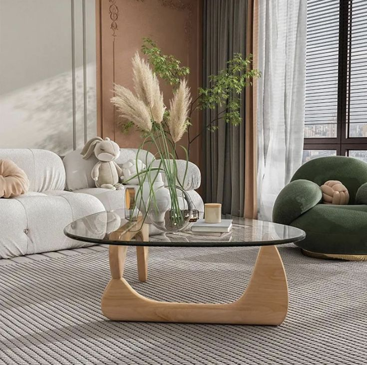
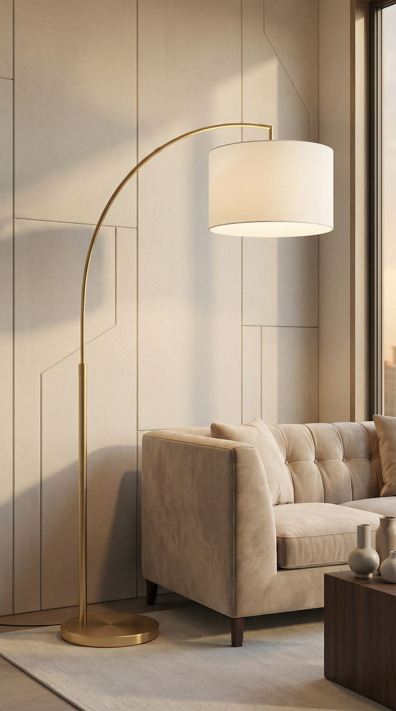

Your living room is the heart of your home — where you relax, entertain guests, and spend cozy evenings.
Here are some carefully selected pieces that can instantly elevate your space.

Samsung 65-Inch QLED Q8F 4K Smart TV
Some upgrades change everything — and this is one of them.
The Samsung QLED Q8F instantly turns your living room into a cinematic experience with stunning 4K clarity, vibrant colors, and an ultra-slim design that blends beautifully into modern spaces.
Why This TV Is Worth It
This isn't just a screen — it becomes the centerpiece of your living room.
Movies feel more immersive, sports look incredibly smooth, and even regular shows suddenly look better thanks to Samsung's AI-powered upscaling.
Key Features
- Brilliant 4K QLED display with over a billion colors
- Quantum Dot technology for vivid picture quality
- Ultra-thin AirSlim design for a clean modern look
- AI processor that enhances picture and sound automatically
- Access to thousands of free streaming channels
- Alexa built-in for easy voice control
Why People Love It
- Instantly upgrades the look of a living room
- Perfect for movie nights and gaming
- Colors look incredibly vivid even in bright rooms
- The slim design feels premium and minimal
- Guests notice it immediately
A Living Room Upgrade You Won't Regret
Many people wait years before upgrading their TV — but once they do, they always wish they had done it sooner.
If you want a living room that feels modern, immersive, and luxurious, this is one of the easiest upgrades you can make.

EASYSOUL Modern Glass Coffee Table
A coffee table can completely change how a living room feels, and this modern glass table does exactly that.
Its sculptural wooden base and curved tempered glass top create a sleek, contemporary centerpiece that instantly elevates your space.
Product Size
- Width: 32.68 inches
- Depth: 22.44 inches
- Height: 15.75 inches
- Maximum weight capacity: 70 lbs
Why This Table Works So Well
- Tempered glass surface that is durable and easy to clean
- Solid wood base for stability and style
- Modern sculptural design that becomes a decor piece
- Perfect size for most living rooms and apartments
- Curved glass keeps the room feeling open and spacious
A Statement Piece Without the Designer Price
Many designer coffee tables with this type of sculptural look cost several hundred dollars.
This one delivers the same aesthetic while staying affordable, making it an easy upgrade for a stylish living room.

Brightech Logan Arc Floor Lamp That Instantly Elevates Your Living Room
A living room is never complete without proper lighting — and this Brightech Logan Arc Floor Lamp completely changes the atmosphere of your space.
With its tall elegant arc and marble base, it adds a modern luxury feel while also giving you perfect lighting for reading, relaxing, or watching TV.
Dimensions & Build
- Height: 76 inches
- Base Width: 17 inches
- Arc Reach: 44 inches
- Base Material: Heavy marble (stable & anti-tip design)
The heavy marble base keeps the lamp extremely stable, preventing wobbling or tipping. Each piece has natural marbling patterns, making every lamp slightly unique.
Why This Lamp Feels Like a Luxury Upgrade
- Modern arc design fits luxury and minimalist interiors
- Creates warm ambient lighting for cozy evenings
- Perfect for sofas, reading corners, or TV areas
- Compatible with smart bulbs and voice control systems
- Includes energy-efficient 3000K LED bulb
Important Before You Buy
This lamp is heavy and very stable, which is great for safety — but it may require two people for assembly.
Some users mention that assembling the arc and shade is much easier when done together.
Why People Love It
It doesn’t just light a room — it transforms the entire atmosphere.
The soft glow adds depth, warmth, and a premium aesthetic that instantly makes your living room feel more designed and intentional.